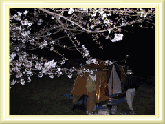
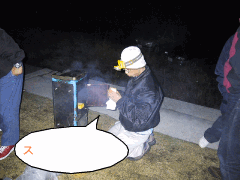

花見宴会！！ | ０１’年３／３１ |
|  | 瀬戸川の河川敷で恒例の花見宴会。去年はいまいちつぼみだった桜も、今年は五分咲き程度で、何とか花見宴会と銘打つことができました。いや、ホントきれいでしたよ。 |
| そんのところで、テントを張り、鍋をつつき、酒を飲みながら親睦を深める作戦です。 当日は１０名程度（飲み過ぎのためか、あまり記憶にない・・・）で酒をがんがん飲む。 |  |
|  | キャンプの時の恒例、キッカーのスモークチーズも振る舞われ、（これがとろけるようなチーズでホント旨い）何の鍋だったかいまいち記憶がないが、旨かった。 飲み過ぎの人もいたようだが、懲りずにまた参加してほしい。 |